🏠
日
月
縦書き／横書き
| あいの火 |
| 中島隆善 |
| Ku-haku Shobo (2013) |
|
あいの火
遠い 遠い 世界の果てに
ひとりの魔法使いがくらしていました
その魔法使いはどんなケガや病気も
ふしぎな力であっというまに
なおしてしまうのでした
だから 世界のあちこちから毎日
たくさんの病気やケガをした
ひとびとやどうぶつたちが
魔法使いのところへやってきます
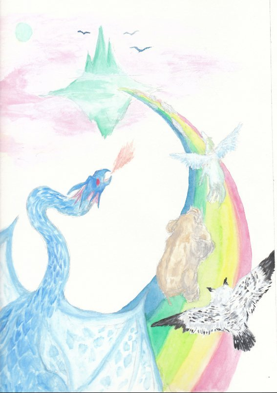
ある日 魔法使いのところへ
ひとりの女の子がやってきました
どこが痛いんだい？
魔法使いは女の子にききました
女の子はむねをおさえて
苦しそうに下をむいたまま
なにも言いませんでした
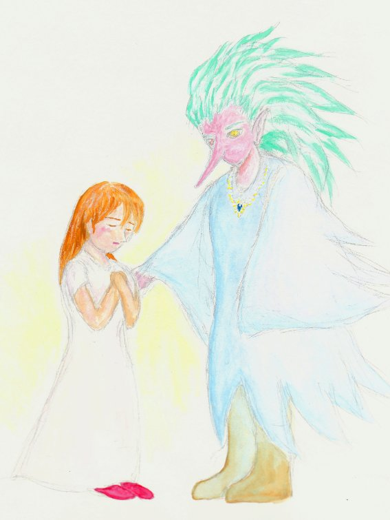
魔法使いには心が見えました
女の子の心はキズだらけで
とても痛そうでした
とても悲しいことがあったんだね？
魔法使いは女の子の心に
やさしくさわりながらいいました
魔法使いがさわると
女の子の心にあったキズは
あっというまにきえてしまいました
でも 女の子はまだ悲しそうに
下をむいたままでした
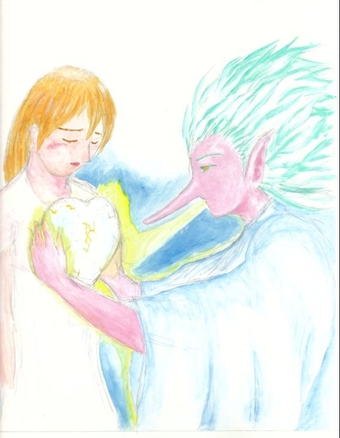
魔法使いには心のキズはなおせても
あいの火を心にともすことは
できませんでした
そうだ みんなの心にもえている
あいの火をすこしわけてもらいにいこう
魔法使いはでかけていきました
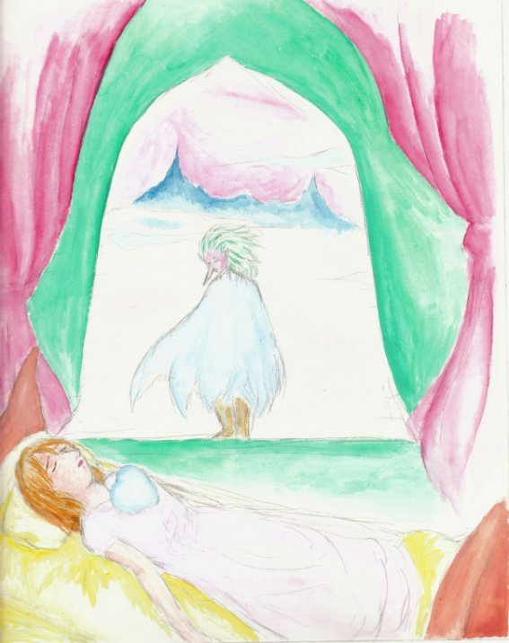
はじめにやってきたのは
きつねのところでした
おねがいです きつねさん
あなたの心にもえている
あいの火をすこしだけ
わけてください
女の子が苦しんでいるのです
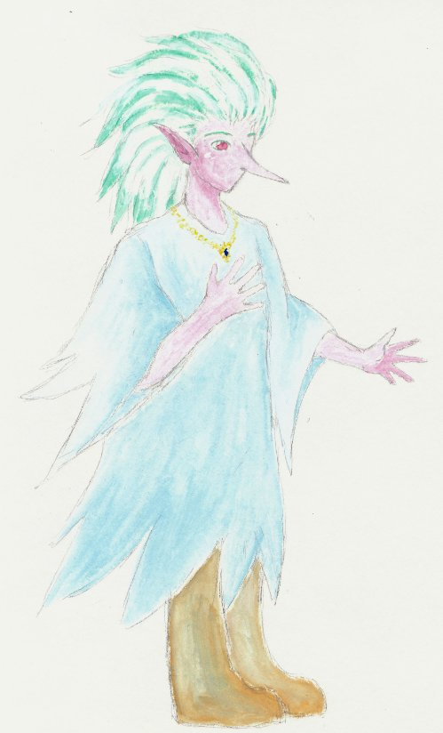
すると きつねがするどい目で
魔法使いをにらみました
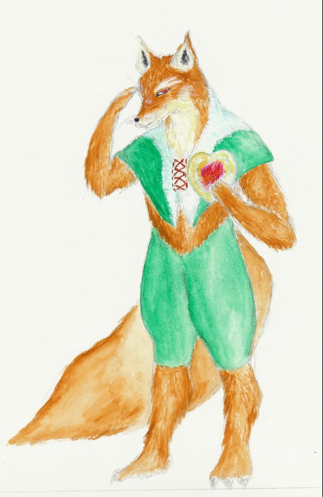
そいつは
このおれより頭が良いかい？
魔法使いはすなおにこたえました
その子はきっとあなたほどすばやく
色々なことを考えられないでしょう
きつねはばかにしたように
にやりとわらっていいました
頭がわるいやつに
あいの火などやるもんか
魔法使いはがっかりして
また旅にでました
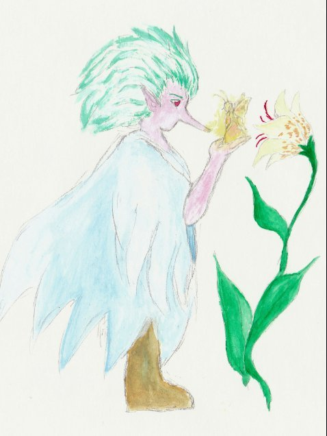
つぎは
妖精のところにやってきました
おねがいです妖精さん
あなたの心にもえている
あいの火を少しだけわけてください
女の子が苦しんでいるのです
すると 妖精はじまんげに
きれいな羽をひろげていいました
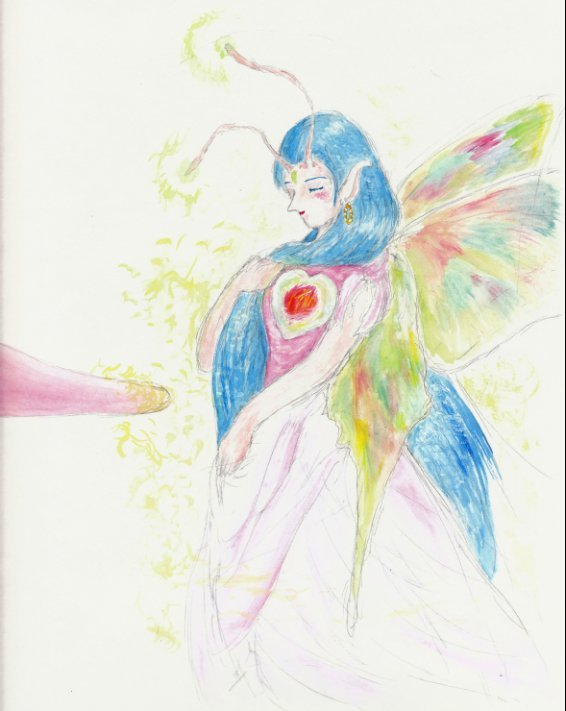
その子は
わたしのように美しいの？
魔法使いは やはり
すなおにこたえました
その子は
あなたのようなきれいな羽を
一枚ももっていません
妖精はつめたくわらっていいました
みにくいものに
わたしのあいの火は
あげられないわ
魔法使いは
またがっかりして
旅にでました
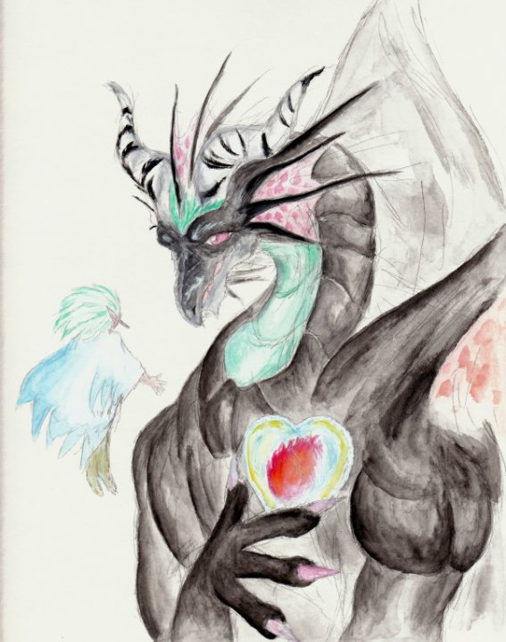
つぎは
りゅうのところにやってきました
りゅうさん おねがいです
あなたの心にもえている
あいの火をすこしだけ
わけてください
女の子が苦しんでいるのです
するとりゅうは太い声でいいました
わけてやってもいいが
そいつは
わたしのようにつよいか？
魔法使いは やはり
すなおにこたえました
その子は あなたのように
大きくもなければ
力がつよくもありません
りゅうは雷がなるように
ほえました
よわいものに
あいの火はやらん！
魔法使いはまたまたがっかりして
りゅうのところを去りました
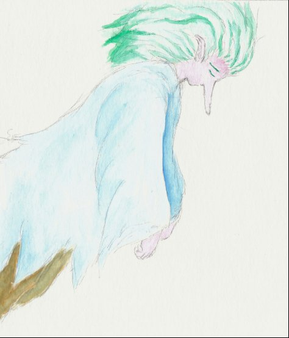
さて もう 魔法使いには
たのみにいけるところが
おもいつきませんでした
すっかり元気がなくなって
空をふらふらとんでいると
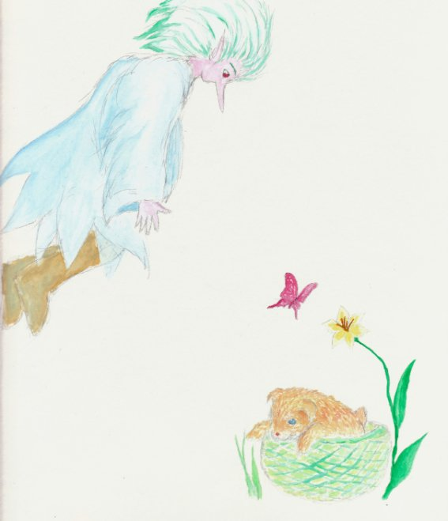
捨てられている子犬が
みえました
魔法使いは子犬をだきあげました
さびしそうにくんくんなきながら
子犬はしがみついてきます
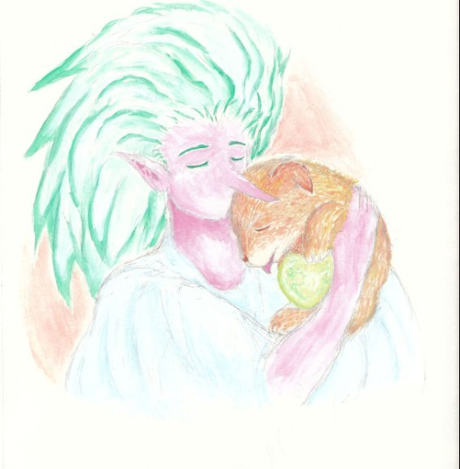
魔法使いには心がみえました
子犬の心はキズだらけでした
悲しいことがあったんだね？
魔法使いは子犬の心に
やさしくさわりました
あっというまに
子犬の心のキズがきえました
でも やっぱり 心の中に
あいの火はともりません
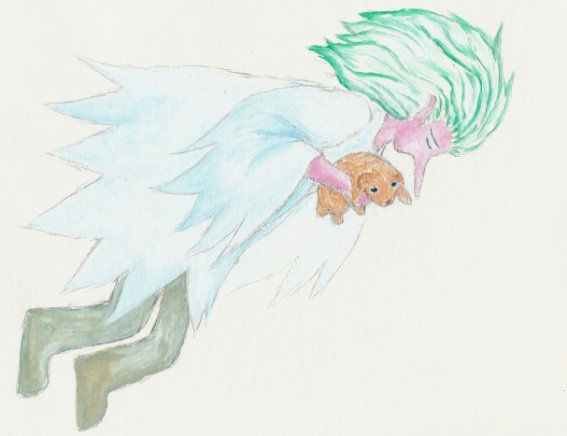
あいの火が
もっとほしくなってしまった
どうすればいいのだろう
魔法使いはなやみました
けっきょく子犬をつれて
女の子のところに
帰ることにしました
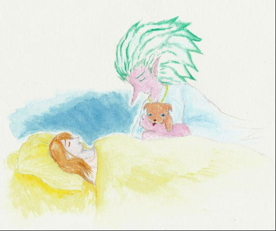
帰ってくると
女の子はますますあおざめて
元気をなくしていました
魔法使いは
どうすればいいのだろう
と ためいきをつきながら
女の子のまくらもとに
すわりました
すると 子犬がくんくんと
またさびしそうにないて
女の子にしがみつきました
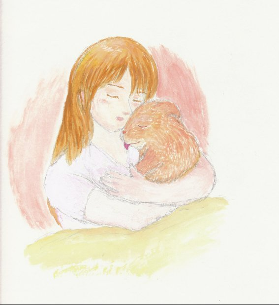
女の子は子犬をだきしめて
ひとこといいました
あったかい
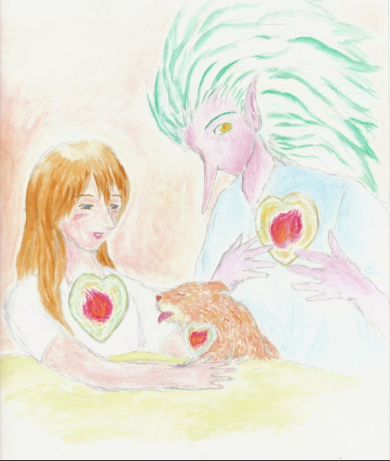
とつぜん 女の子の心の中に
やさしい炎がぽっともえだしました
あおざめていた女の子のほおは
みるみるピンク色にかわっていきます
みるみる笑顔があふれてきました
いつのまにか子犬の心の中にも
あたたかいやさしい炎が
もえていました
魔法使いはびっくりしました
なんとなくじぶんのむねに
手をあてると
じぶんの心の中にも
あたたかいやさしい炎が
もえていたのです
こんど 魔法使いが
あなたのところにたずねてきたら
どうか
ほんのすこしでいいですから
あいの火をわけてあげてください
もしも
あなたが元気がなくなったら
魔法使いがあいの火を
あなたの心にとどけにきます